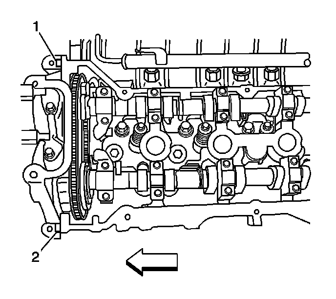

Camshaft Cover Replacement - Left Side
Camshaft Cover Replacement - Left Side
Removal Procedure

1. Remove the fuel injector sight shield. Refer to Fuel Injector Sight Shield Replacement (Service and Repair) .
2. Disconnect the positive crankcase ventilation (PCV) fresh air tube from the left camshaft cover.
3. Remove the bank 2 ignition coils. Refer to Ignition Coil Replacement - Bank 2 (Service and Repair) .

4. Remove the bolt connecting the ground strap to the left camshaft cover.
5. Remove the bolt securing the oil level indicator tube to the left cylinder head and reposition the tube away from the camshaft cover.

6. Remove the camshaft cover bolts.
7. Lift the camshaft drive end of the camshaft cover up.
8. Remove the camshaft cover.
9. Discard the camshaft cover gasket and spark plug port seals if there is any evidence of damage or if the seal comes out of the groove in the cover during removal.
10. Clean the gasket mating surface on the cylinder head.
11. Clean and inspect the camshaft cover. Refer to Camshaft Cover Cleaning and Inspection () .
Installation Procedure

1. Install a new camshaft cover gasket to the camshaft cover if necessary.
2. Place a small amount of sealant at the split line (1, 2) of the left cylinder head and the left camshaft position actuator housing. Refer to Sealers, Adhesives, and Lubricants (Specifications) .
Important: Be careful to prevent the exposed section of the camshaft cover gasket from being damaged by the edge of the cylinder head casting.
3. Work the camshaft cover into position by pivoting the cover down and aligning the bolt holes.
Notice: Refer to Fastener Notice (Fastener Notice) .
4. Install the camshaft cover bolts.
Tighten the bolts to 10 N.m (89 lb in).
5. Install the bolt connecting the left camshaft cover ground strap to the left camshaft cover.
Tighten the bolt to 10 N.m (89 lb in).
6. Rotate the oil level indicator tube back into its original position and install the bolt securing the tube to the cylinder head.
Tighten the bolt to 10 N.m (89 lb in).
7. Install the bank 2 ignition coils. Refer to Ignition Coil Replacement - Bank 2 (Service and Repair) .
8. Connect the PCV fresh air tube to the left camshaft cover.
9. Install the fuel injector sight shield. Refer to Fuel Injector Sight Shield Replacement (Service and Repair) .